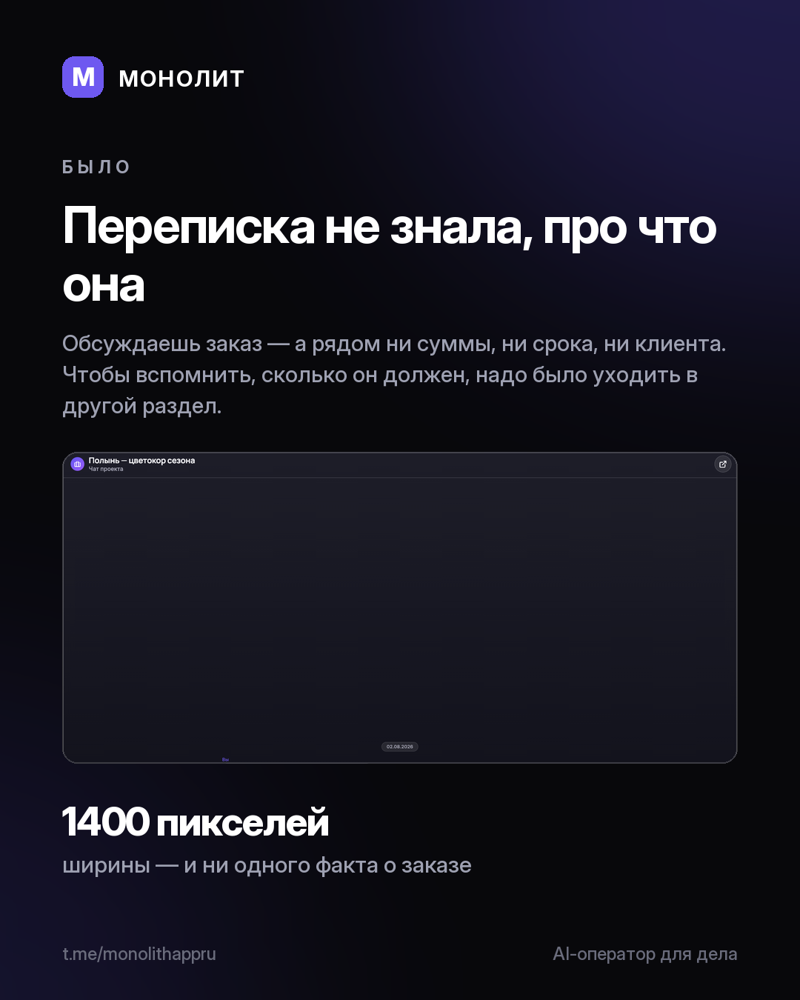

Дневник разработки · 11.08.2026
Переписка теперь знает, про что она

Чат проекта был просто чатом: сообщения и название сверху. Обсуждаешь монтаж — а сколько клиент уже заплатил и сколько ещё должен, помнишь сам или уходишь в другой раздел.
Теперь рядом с лентой стоит сам заказ. Стадия, срок сдачи, гонорар, сколько получено и сколько ещё ждём на счёт. Ниже — этапы («2 из 5» и что ближайшее), кто в деле с ролью и своей долей, и незакрытые позиции, если кого-то ещё не нашли. Личный чат показывает собеседника: ставку, часы, долг перед ним. Общий — всю команду.
На телефоне то же самое живёт одной строкой под шапкой: клиент, стадия, срок и главное число справа. Тап раскрывает — высота экрана в кармане дороже ширины монитора.
Одна деталь, ради которой это переделывалось дважды. Остаток по заказу подписан «ждём на счёт», а не «долг»: пока срок оплаты не наступил, никакой просрочки нет, и пугать ею — врать. А бюджет клиента встаёт рядом с гонораром, только когда он больше, иначе это одно и то же число дважды.
Windows и Android. Обновление придёт само.
МОНОЛИТ — учёт заказов, клиентов и денег одной фразой. Windows и Android, бесплатная бета.
Скачать Читать канал